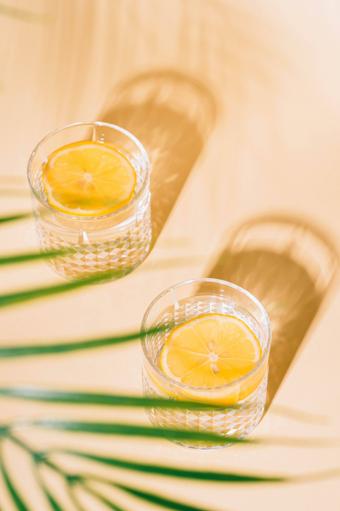
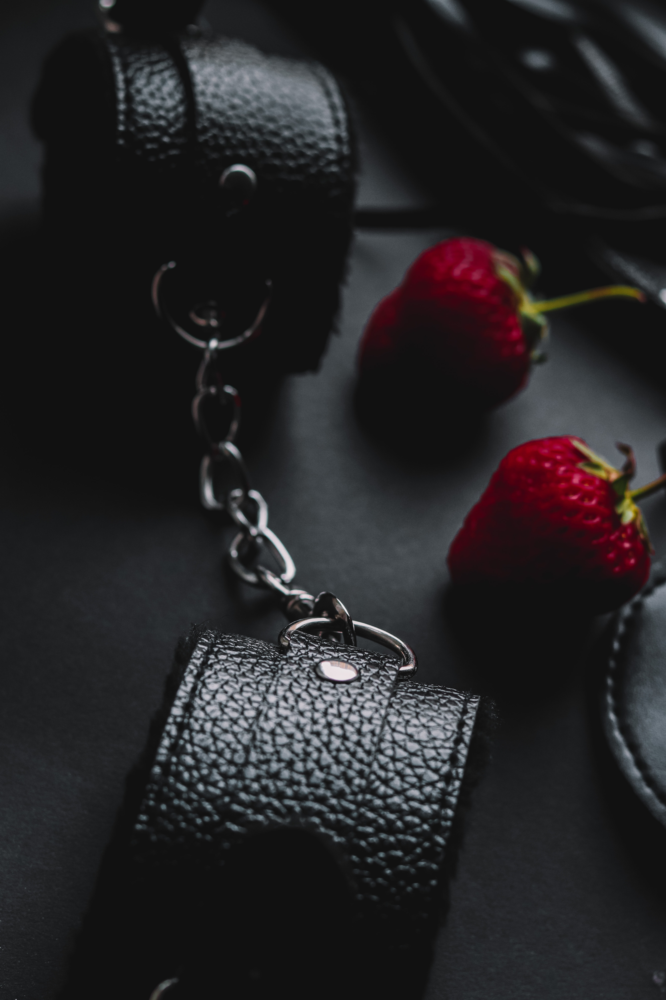

Dating Tips
List of Ideas:
- My favorite restaurant: **De Hof** - Arnhemseweg 3, 3927 EE Renswoude. The restaurant is well-informed about gluten-free food and takes cross-contamination into account. You can choose from the menu, and they will see if they can make it gluten-free. The food is super delicious. **I advise you to make a reservation.**
- Go to a movie after dinner.
- Bison Bowling Utrecht - Mariaplaats 13A, 3511 LJ Utrecht. Guests eating gluten-free will receive a letter at the start of dinner outlining safe options. The buffet includes gluten-free soup, sandwiches, fries, sauces, salads, meat, and fish. They can even provide a separate table for grilling. You can bowl if you both enjoy it.
- Play tourist in your hometown. Visit local landmarks and attractions with fresh eyes.
- Make a fun new recipe together. Even if you're not into cooking, it can be a fun experience!
- Take a hike. Exploring nature together is always exciting!
- Hit the beach. Sun, sand, surf, and lots of relaxation.
- Play a board game. Add a friendly wager to spice things up!
- Throw a casino night. Play cards with fun rewards.
- Build a campfire and make s’mores!
- Play hide 'n seek—it's not just for kids!
- Take a dance class—even if you have two left feet!
- Volunteer together for a meaningful experience.
- Visit the zoo or aquarium and enjoy the cute animals.
More Advanced Date:
- If you are a jealous type, you might want to skip this! A **swingers club** is an entertainment venue where couples can meet and engage in various activities. Some clubs offer normal outings like **dancing, dining, and meeting new people** while also allowing for more intimate experiences. Examples of clubs: **Amourette (Maarssen UT), Partyplayers (Lelystad FL), Devils and Angels (Susteren LB), De Zaar (Venlo LB), Kasteel Waterloo (Beesel LB), Fun4Two (Moordrecht ZH), De Showboat (Zaandijk NH).**
- **Adult Toys** - If you're interested, check out **Easytoys** or **Sextoyland** online or visit an erotic shop.
- **Lingerie & Dress Codes** - Some events require specific outfits made of **lacquer, leather, latex, datex, neoprene, metal, or feathers**. Always check the event website for dress codes.
New Topic:

Every month, there will be a new topic! This month, you can choose what you want to do on your first date.